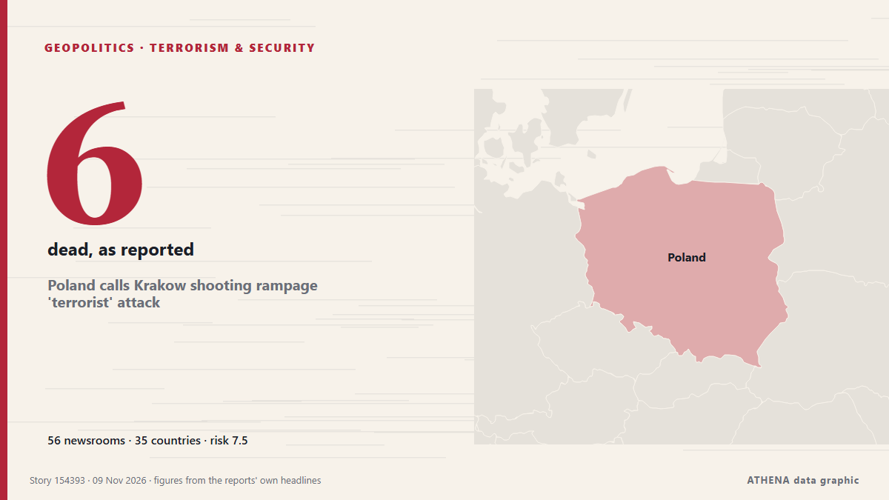

Poland calls Krakow shooting rampage 'terrorist' attack

Shooter, 25, remains in ‘very critical condition’ in hospital after shootout with police. de The Independent
Relayé de façon indépendante par 56 médias dans 35 pays depuis le 7 nov. ; premier à l'annoncer : Belfast Telegraph ; la couverture faiblit. ATHENA juge le risque élevé (7.5/10), surtout en raison de la gravité des dommages décrits et de sa portée géographique et sectorielle. La confiance est de 87 % (élevée) : 56 médias indépendants le confirment, avec une fiabilité moyenne des sources de 75 %. Médias par pays : Royaume-Uni (6), Turquie (4), Malaisie (3). Couverture : du 7 nov. au 8 nov., 19 heures.
Pourquoi c'est important: Les évolutions de sécurité et de diplomatie peuvent déplacer alliances, échanges et marchés bien au-delà des pays directement concernés.
Ce qui a changé : 57 nouveaux articles de 44 rédactions dans les 24 heures jusqu'au 9 nov..
Premier titre : Polish shooter was fascinated by far-right ideology, interior minister says
Les titres sont affichés en anglais, tels que publiés.
Comment lire cette page
- Ce que vous lisez
- 56 médias dans 35 pays ont rapporté cet événement. Les reportages ci-dessous sont classés selon leur ordre de parution ; chaque titre ouvre l'article original. ATHENA n'écrit aucun reportage.
- Notre lecture
- Pour mémoire — Les reportages décrivent une affaire terminée, intérieure, commerciale ou personnelle. Nous la consignons pour que vous voyiez qui l'a rapportée et quand. Nous ne suivons pas ici de risque de conflit plus large.
- Quelle base de preuves
- Solide De nombreux médias indépendants, dans de nombreux pays, décrivent le même événement.
Après retrait des doublons, des éléments hors sujet et périmés, 23 des 40 reportages listés sont retenus ; 90 % des titres correspondent à l'événement.
- Ce que cela ne veut pas dire
- ATHENA mesure la façon dont un événement est rapporté, pas sa véracité. Ce n'est ni une prévision, ni un jugement sur qui a raison, ni un conseil.
- Ce qui la changerait
- Des reportages d'autres médias indépendants montrant une évolution différente, ou une confirmation ou un démenti ferme d'une source officielle.
Lecture R2 · actualisée à chaque mise à jour de cette page. ATHENA n'a pas encore publié de bilan de ces lectures ; il sera lié ici le moment venu.
En un coup d'œil
Sélectionné, noté et rédigé par la méthodologie publiée d'ATHENA. Aucun rédacteur n'intervient sur un événement en particulier. Comment il est produit ›
| 07 Nov 15:35 UTC | 1 |
|---|---|
| 07 Nov 17:35 UTC | 0 |
| 07 Nov 19:35 UTC | 1 |
| 07 Nov 21:35 UTC | 6 |
| 07 Nov 23:35 UTC | 2 |
| 08 Nov 01:35 UTC | 4 |
| 08 Nov 03:35 UTC | 5 |
| 08 Nov 05:35 UTC | 3 |
| 08 Nov 07:35 UTC | 8 |
| 08 Nov 09:35 UTC | 13 |
| 08 Nov 11:35 UTC | 10 |
| 08 Nov 13:35 UTC | 11 |
| 08 Nov 15:35 UTC | 2 |
| 08 Nov 17:35 UTC | 2 |
| 08 Nov 19:35 UTC | 2 |
| 08 Nov 21:35 UTC | 0 |
| 08 Nov 23:35 UTC | 0 |
| 09 Nov 01:35 UTC | 1 |
| 07 Nov 22:54 UTC | 2.9 |
|---|---|
| 07 Nov 23:11 UTC | 3.7 |
| 07 Nov 23:30 UTC | 5.4 |
| 07 Nov 23:39 UTC | 6.3 |
| 08 Nov 13:09 UTC | 6.5 |
| 08 Nov 13:47 UTC | 7.0 |
| 08 Nov 15:11 UTC | 6.5 |
| 08 Nov 15:14 UTC | 7.4 |
| 08 Nov 17:26 UTC | 6.8 |
| 08 Nov 23:33 UTC | 7.5 |
| 09 Nov 02:58 UTC | 7.5 |
Pourquoi ces chiffres
Importance
Risque
Confiance
La couverture : qui l'a annoncé, et quand
titre tel que publié · ouvre l'original- Belfast Telegraph · Royaume-UniSuspect in Krakow shooting that killed six ‘fascinated with far-right views’
- Deccan Herald · IndePolish shooter was fascinated by far-right ideology, interior minister says
- Livemint · IndeGunman Kills Six People in Krakow, Polish Police Say
- Anadolu Agency (English) · TurquieKrakow attacker may be influenced by 'far-right ideologies': Polish interior minister
- The Independent · Royaume-UniWho is the Krakow shooting suspect ‘influenced by far-right ideology’?
- France 24 English · FranceGunman kills six in Krakow, three more bodies found at his house
- TRT World · TurquieFar-right gunman kills six in Krakow as three bodies found at suspect's home
- APA (English) · AzerbaïdjanPolish PM announces two-day national mourning period
- Free Malaysia Today · MalaisieGunman ‘fascinated by far-right’ kills six in Poland
- FBC News · FidjiPoland in shock after six die in Krakow mass shooting
- The Korea Times · Corée du SudPoland in shock after 6 die in Krakow mass shooting
- Ada Derana · Sri LankaSix killed in Krakow 'far-right' shooting, as three more bodies found in attacker's home
- Sky News (World) · Royaume-UniBriton among six killed by 'far-right' gunman in Krakow rampage
- CGTN (World) · ChinePoland in shock after six killed in Krakow mass shooting
- eNCA · Afrique du SudGunman 'fascinated by far-right' kills six in Krakow, Poland
- Anadolu Agency (English) · TurquiePoland declares 2 days of national mourning after deadly shooting in Krakow
- New Straits Times · MalaisiePoland declares two days of national mourning after deadly shooting in Krakow
- People Daily · KenyaSix killed in Poland shooting, as three more bodies found in attacker’s home
- Daily Mirror · Sri LankaSix killed in Krakow ’far-right’ shooting, as three more bodies found in attacker’s home
- Express Tribune · PakistanPoland mourns victims of Krakow mass shooting as security fears grow
- ProtoThema English ·Krakow Attack: Authorities investigate gunman’s Motives as death toll rises to nine, including three found at his home (videos)
- TheJournal.ie · IrlandeBodies found at home of suspect in Kraków mass shooting
- Asharq Al-Awsat (English) · Arabie saouditeGunman 'Fascinated by Far-right' Kills Six in Krakow, Poland
- Mehr News (English) · IranShooting in Poland leaves 6 killed, 16 injured: report
- Türkiye Today · TurquieSuspect 'fascinated by far-right ideologies' kills 6 in Krakow’s Main Square
- The Irish News (Belfast) · Royaume-UniPoles mourn rare mass killing as authorities say attacker had far-right views
- France 24 English · FrancePoland launches terrorism probe into mass shooting in Krakow
- Free Malaysia Today · MalaisiePoland mourns 6 dead from Krakow shooting rampage
- Stuff · Nouvelle-ZélandePoland mourns rare mass killing, authorities say attacker had far-right views
- The Straits Times · SingapourPoland mourns six dead from Krakow shooting rampage
- DW English · AllemagnePoland begins two days of mourning over Krakow shooting
- ABC News (International) · États-UnisPoles mourn rare mass killing as authorities say attacker had far-right views
- The Irish News (Belfast) · Royaume-UniBriton killed and another injured in Poland mass shooting that left six dead
- The Straits Times · SingapourPoland mourns victims of Krakow shooting amid security fears
- Evening Standard (London) · Royaume-UniBritish national among six killed in Poland mass shooting as police probe far-right motive
- RTÉ News · IrlandePoland launches terrorism probe into Krakow mass shooting
- Luxembourg Times · LuxembourgGunman kills six people in Krakow, Polish police say
- The Kathmandu Post · NépalPoland mourns victims of Krakow mass shooting as security fears grow
- Cyprus Mail · ChyprePoland mourns victims of Krakow mass shooting as security fears grow
- BusinessWorld · PhilippinesPoland in shock after six die in Krakow mass shooting